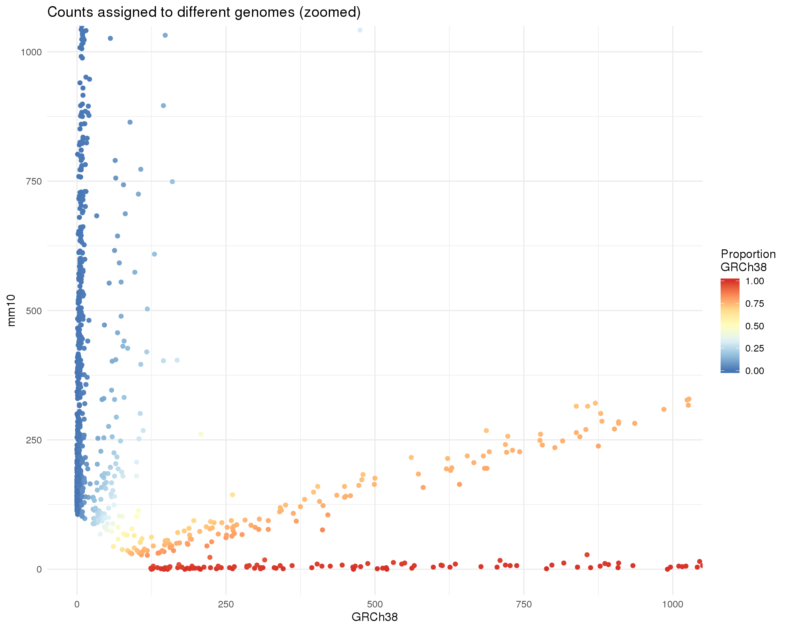

Last updated: 2019-06-20
Checks: 7 0
Knit directory: OzSingleCells2019/
This reproducible R Markdown analysis was created with workflowr (version 1.4.0). The Checks tab describes the reproducibility checks that were applied when the results were created. The Past versions tab lists the development history.
Great! Since the R Markdown file has been committed to the Git repository, you know the exact version of the code that produced these results.
Great job! The global environment was empty. Objects defined in the global environment can affect the analysis in your R Markdown file in unknown ways. For reproduciblity it’s best to always run the code in an empty environment.
The command set.seed(20190619) was run prior to running the code in the R Markdown file. Setting a seed ensures that any results that rely on randomness, e.g. subsampling or permutations, are reproducible.
Great job! Recording the operating system, R version, and package versions is critical for reproducibility.
Nice! There were no cached chunks for this analysis, so you can be confident that you successfully produced the results during this run.
Great job! Using relative paths to the files within your workflowr project makes it easier to run your code on other machines.
Great! You are using Git for version control. Tracking code development and connecting the code version to the results is critical for reproducibility. The version displayed above was the version of the Git repository at the time these results were generated.
Note that you need to be careful to ensure that all relevant files for the analysis have been committed to Git prior to generating the results (you can use wflow_publish or wflow_git_commit). workflowr only checks the R Markdown file, but you know if there are other scripts or data files that it depends on. Below is the status of the Git repository when the results were generated:
Ignored files:
Ignored: .Rproj.user/
Ignored: analysis/cache/
Ignored: packrat/lib-R/
Ignored: packrat/lib-ext/
Ignored: packrat/lib/
Ignored: packrat/src/
Untracked files:
Untracked: docs/figure/
Note that any generated files, e.g. HTML, png, CSS, etc., are not included in this status report because it is ok for generated content to have uncommitted changes.
These are the previous versions of the R Markdown and HTML files. If you’ve configured a remote Git repository (see ?wflow_git_remote), click on the hyperlinks in the table below to view them.
| File | Version | Author | Date | Message |
|---|---|---|---|---|
| Rmd | a140753 | Luke Zappia | 2019-06-20 | Add pre-processing |
#### LIBRARIES ####
# Package conflicts
library("conflicted")
# Single-cell
library("SingleCellExperiment")
# File paths
library("fs")
library("here")
# Presentation
library("knitr")
library("jsonlite")
# Pipes
library("magrittr")
# Tidyverse
library("tidyverse")
### CONFLICT PREFERENCES ####
conflict_prefer("path", "fs")
### SOURCE FUNCTIONS ####
source(here("R/annotate.R"))
source(here("R/output.R"))
### OUTPUT DIRECTORY ####
OUT_DIR <- here("output", DOCNAME)
dir_create(OUT_DIR)
#### SET PARALLEL ####
bpparam <- BiocParallel::MulticoreParam(workers = 10)
#### SET GGPLOT THEME ####
theme_set(theme_minimal())
#### SET PATHS ####
source(here("R/set_paths.R"))In this document we are going to load the Swarbrick dataset and do some basic exploration to find out what it contains.
sce_raw <- readRDS(PATHS$sce_raw)
cite_raw <- read_csv(PATHS$cite_raw,
col_types = cols(
.default = col_double(),
Antibody = col_character()
))The raw dataset is provided as a SingleCellExperiment object with 29621 rows and 3412 columns.
print(sce_raw)class: SingleCellExperiment
dim: 29621 3412
metadata(0):
assays(1): counts
rownames(29621): GRCh38-RP11-34P13.7 GRCh38-FO538757.2 ...
mm10---PISD mm10---DHRSX
rowData names(0):
colnames(3412): AAACCTGAGGTGCTTT AAACCTGAGTTGCAGG ...
TTTGTCAGTAGCGCAA TTTGTCAGTGAGGGAG
colData names(0):
reducedDimNames(0):
spikeNames(0):The column names appear to be cell barcodes but the row names are more complicated.
The CITE-seq antibody data is provided as a CSV file with 96 row and 3413 columns.
print(cite_raw)# A tibble: 96 x 3,413
Antibody GCCAAATTCCGAGCCA CGCCAAGAGGGAAACA AAACCTGTCTCCAGGG
<chr> <dbl> <dbl> <dbl>
1 CD3 7 16 9
2 CD4 2 5 78
3 CD8a 3 5 1
4 CD14 1 1 1
5 CD15 7 7 8
6 CD16 0 1 1
7 CD19 4 142 2
8 CD25 2 0 0
9 CD28 0 0 0
10 CD40 2 113 10
# … with 86 more rows, and 3,409 more variables: CCGTGGAAGCTGCAAG <dbl>,
# TTTGCGCAGCGATGAC <dbl>, GCTGCAGCATCACCCT <dbl>,
# GGAACTTGTCTGCCAG <dbl>, TTGGCAACAAGCGAGT <dbl>,
# CCCAGTTGTCCGAATT <dbl>, GGATTACCATGTCTCC <dbl>,
# GTTACAGTCGGTGTTA <dbl>, ACGCAGCGTTTGGGCC <dbl>,
# TGTATTCGTCTCATCC <dbl>, ACTTACTAGCTGAAAT <dbl>,
# GCGCAACGTAGCTAAA <dbl>, TTGACTTGTACTTCTT <dbl>,
# ATTACTCAGGCATGGT <dbl>, AGAATAGAGCCGATTT <dbl>,
# GAACGGAAGAAGGTTT <dbl>, TCTCTAAAGTGAATTG <dbl>,
# AGGCCACAGCAATCTC <dbl>, CTAGAGTAGTGTTAGA <dbl>,
# TCAGCAAGTAATCGTC <dbl>, AGCGGTCTCTGCCAGG <dbl>,
# CTACCCAAGTACATGA <dbl>, GTACGTAAGTCAAGCG <dbl>,
# CGGTTAACAGAAGCAC <dbl>, TCGCGAGTCGTCCGTT <dbl>,
# CGTCTACGTCATCGGC <dbl>, TTGCGTCAGTTACGGG <dbl>,
# TCGGTAACATCGTCGG <dbl>, CGGAGTCAGACAAGCC <dbl>,
# GTTTCTAGTCATCGGC <dbl>, CATTATCTCGACCAGC <dbl>,
# GGGCACTAGATCCCAT <dbl>, CCTAGCTGTTTGTTGG <dbl>,
# TCGGTAAAGCTCCCAG <dbl>, CCGTGGACACACTGCG <dbl>,
# CGGAGCTTCTTTCCTC <dbl>, CGATTGAGTCATCGGC <dbl>,
# GACAGAGAGACCCACC <dbl>, TATCTCACAATGACCT <dbl>,
# GGACAAGAGAGCAATT <dbl>, GTTCATTCACTTAACG <dbl>,
# TTGCCGTGTTGGAGGT <dbl>, ACAGCCGCAAGAGTCG <dbl>,
# GATGCTACACTCAGGC <dbl>, CACACAACAGCATACT <dbl>,
# CAGAATCTCGAATGCT <dbl>, TTCCCAGAGAGGTTAT <dbl>,
# TAAGCGTAGATGCCAG <dbl>, TGGCGCAAGACAAGCC <dbl>,
# GTCCTCATCAACACTG <dbl>, CGATCGGGTTGTACAC <dbl>,
# CGAGAAGGTCTTCTCG <dbl>, ATCCGAACACGACTCG <dbl>,
# CCTAGCTAGCAGGTCA <dbl>, AAGGAGCTCACAATGC <dbl>,
# GAAACTCCACATGGGA <dbl>, CTAAGACCATGAAGTA <dbl>,
# CAGATCATCGTAGGAG <dbl>, ACGCCAGCATTCTCAT <dbl>,
# GGTGCGTGTATCGCAT <dbl>, CACCAGGCATGCTGGC <dbl>,
# CTGTTTAGTCGGGTCT <dbl>, GCTGGGTTCACCACCT <dbl>,
# GGACAGATCCCATTTA <dbl>, TACTTACAGAGCTTCT <dbl>,
# AGCTCCTGTCTAGCGC <dbl>, TTAGGACCATTGGCGC <dbl>,
# TGTGTTTTCAAGCCTA <dbl>, ACATACGAGCCACGTC <dbl>,
# AGCTCTCGTTCCTCCA <dbl>, ACAGCTACACGCGAAA <dbl>,
# CCGTACTAGACGACGT <dbl>, CGCTATCTCAGTGTTG <dbl>,
# CGATTGACAGCTGTTA <dbl>, GTGCTTCAGTGGTAGC <dbl>,
# CCTTCCCTCTACTATC <dbl>, CTGCGGACACTTCTGC <dbl>,
# GCATGATCAGCAGTTT <dbl>, CGGTTAAGTCCCGACA <dbl>,
# ACATCAGGTCTTCTCG <dbl>, CACAGTAAGCCAGTAG <dbl>,
# TAAACCGAGCACACAG <dbl>, CGTCACTTCCGAACGC <dbl>,
# GCTGCAGCAGGCTCAC <dbl>, TCAGATGTCAGCATGT <dbl>,
# GCGACCAGTAATCGTC <dbl>, ACGTCAATCTGGTGTA <dbl>,
# TGGACGCCAATAGAGT <dbl>, ATAACGCCAGCTCCGA <dbl>,
# GCTGCAGCAAGAGGCT <dbl>, CCTCTGAAGGAGTTTA <dbl>,
# GGGAATGGTTACCAGT <dbl>, TACGGATCACCGTTGG <dbl>,
# AACCGCGTCAAGAAGT <dbl>, CACAGTATCGTCCAGG <dbl>,
# GCATACAAGTGCAAGC <dbl>, AGTGAGGGTTTAGGAA <dbl>,
# CTCGGAGAGGCTAGCA <dbl>, TTGCGTCTCTCCGGTT <dbl>,
# CTTTGCGCATATACCG <dbl>, …The number of columns matches up with the SingleCellExperiment object and the column names are similar so we should be able to match up the cells.
Let’s have a look at the feature names of the SingleCellExperiment in more detail. The first 10 rownames are:
head(rownames(sce_raw), n = 10) [1] "GRCh38-RP11-34P13.7" "GRCh38-FO538757.2" "GRCh38-AP006222.2"
[4] "GRCh38-RP4-669L17.2" "GRCh38-RP4-669L17.10" "GRCh38-RP11-206L10.9"
[7] "GRCh38-LINC00115" "GRCh38-FAM41C" "GRCh38-RP11-54O7.1"
[10] "GRCh38-NOC2L" And the last 10 are:
tail(rownames(sce_raw), n = 10) [1] "mm10---mt-Nd5" "mm10---mt-Nd6" "mm10---mt-Cytb"
[4] "mm10---Vamp7" "mm10---Spry3" "mm10---Tmlhe"
[7] "mm10---Csprs" "mm10---AC168977.1" "mm10---PISD"
[10] "mm10---DHRSX" Some mouse cells were spiked into the dataset so the prefixes seem to indicate the genome for each feature, either human (GRCh38) or mouse (mm10). There are 17222 features starting with “GRCh38” and 12399 starting with “mm10”. Together they add up to the total number of features in the dataset. Let’s add this information to the object:
row_data <- tibble(FeatureID = rownames(sce_raw)) %>%
mutate(
FeatureName = str_remove(FeatureID, "GRCh38-"),
FeatureName = str_remove(FeatureName,"mm10---")
) %>%
mutate(
Genome = str_extract(FeatureID, "[A-Za-z0-9]+-"),
Genome = str_remove(Genome, "-")
)For this analysis we are only interested in the human cells so let’s try and select just those. To do that we will calculate the total counts assigned to human or mouse genes and see if we can use that to separate the different types of cells.
col_data <- tibble(Barcode = colnames(sce_raw)) %>%
mutate(
GRCh38Counts = counts(sce_raw) %>%
magrittr::extract(row_data$Genome == "GRCh38", ) %>%
colSums(),
mm10Counts = counts(sce_raw) %>%
magrittr::extract(row_data$Genome == "mm10", ) %>%
colSums()
) %>%
mutate(PropGRCh38 = GRCh38Counts / (GRCh38Counts + mm10Counts))
gg <- ggplot(col_data,
aes(x = GRCh38Counts, y = mm10Counts, colour = PropGRCh38)) +
geom_point() +
scale_colour_distiller(palette = "RdYlBu") +
labs(
title = "Counts assigned to different genomes",
x = "GRCh38",
y = "mm10",
colour = "Proportion\nGRCh38"
)
ggIt looks like it should be easy to separation most of the cells but because the range is so big it’s hard to see what is happening for low count cells. Let’s zoom in a bit to look at those.
gg + coord_cartesian(xlim = c(0, 1000), ylim = c(0, 1000)) +
labs(title = "Counts assigned to different genomes (zoomed)")
thresh_prop <- 0.95Now we can see that there is a set of cells that have counts from both genomes. These are potentially doublets where two cells have been captured in the same droplet. There are 302 cells that have at least 5 percent of counts from each genome.
To select human cells I am going to set a threshold of having at least 95 percent of counts assigned to GRCh38.
col_data$Selected <- col_data$PropGRCh38 >= thresh_prop
ggplot(col_data, aes(x = GRCh38Counts, y = mm10Counts, colour = Selected)) +
geom_point() +
coord_cartesian(xlim = c(0, 1000), ylim = c(0, 1000)) +
labs(
title = "Selected human cells (zoomed)",
x = "GRCh38",
y = "mm10"
)Doing this will remove 1013 cells, giving a dataset with 2399 cells remaining.
rowData(sce_raw) <- DataFrame(row_data)
colData(sce_raw) <- DataFrame(col_data)
colnames(sce_raw) <- col_data$Barcode
sce <- sce_raw[, colData(sce_raw)$Selected]Now that we have removed the mouse cells we can also get rid of the mm10 genes.
sce <- sce[rowData(sce)$Genome == "GRCh38", ]
rownames(sce) <- rowData(sce)$FeatureNameThe human only RNA-seq dataset now has 17222 features and 2399 cells.
Now that we have a dataset that contains information from a single genome we can add some annotation from BioMart using the scater package. We also assign cell cycle stages using the cyclone method in scran.
sce <- annotate_sce(
sce,
org = "human",
id_type = "symbol",
add_anno = TRUE,
calc_qc = TRUE,
cell_cycle = TRUE,
BPPARAM = bpparam,
verbose = TRUE
)Cell annotations
Barcode, GRCh38Counts, mm10Counts, PropGRCh38, Selected, G1Score, SScore, G2MScore, CellCycle, is_cell_control, total_features_by_counts, log10_total_features_by_counts, total_counts, log10_total_counts, pct_counts_in_top_50_features, pct_counts_in_top_100_features, pct_counts_in_top_200_features, pct_counts_in_top_500_features, total_features_by_counts_endogenous, log10_total_features_by_counts_endogenous, total_counts_endogenous, log10_total_counts_endogenous, pct_counts_endogenous, pct_counts_in_top_50_features_endogenous, pct_counts_in_top_100_features_endogenous, pct_counts_in_top_200_features_endogenous, pct_counts_in_top_500_features_endogenous, total_features_by_counts_feature_control, log10_total_features_by_counts_feature_control, total_counts_feature_control, log10_total_counts_feature_control, pct_counts_feature_control, pct_counts_in_top_50_features_feature_control, pct_counts_in_top_100_features_feature_control, pct_counts_in_top_200_features_feature_control, pct_counts_in_top_500_features_feature_control, total_features_by_counts_MT, log10_total_features_by_counts_MT, total_counts_MT, log10_total_counts_MT, pct_counts_MT, pct_counts_in_top_50_features_MT, pct_counts_in_top_100_features_MT, pct_counts_in_top_200_features_MT, pct_counts_in_top_500_features_MT
Feature annotations
FeatureID, FeatureName, Genome, ensembl_gene_id, entrezgene, external_gene_name, hgnc_symbol, chromosome_name, description, gene_biotype, percentage_gene_gc_content, is_feature_control, is_feature_control_MT, mean_counts, log10_mean_counts, n_cells_by_counts, pct_dropout_by_counts, total_counts, log10_total_counts
Since we have selected cells in the RNA-seq dataset we want to extract those same cells from the CITE data. We are also going to store this data in another SingleCellExperiment.
cite_mat <- as.matrix(cite_raw[, colnames(sce)]) %>%
set_rownames(paste0("Anti-", cite_raw$Antibody))
cite <- SingleCellExperiment(assays = list(counts = cite_mat)) %>%
annotate_sce(calc_qc = TRUE)
citeclass: SingleCellExperiment
dim: 96 2399
metadata(0):
assays(1): counts
rownames(96): Anti-CD3 Anti-CD4 ... Anti-IgG2a Anti-IgG2b
rowData names(7): is_feature_control mean_counts ... total_counts
log10_total_counts
colnames(2399): AAACCTGAGTTGCAGG AAACCTGGTCGTTGTA ...
TTTGTCACAGGTCGTC TTTGTCAGTAGCGCAA
colData names(9): is_cell_control total_features_by_counts ...
pct_counts_in_top_200_features pct_counts_in_top_500_features
reducedDimNames(0):
spikeNames(0):This table describes parameters used and set in this document.
params <- list(
list(
Parameter = "n_cells_raw",
Value = ncol(sce_raw),
Description = "Number of cells in the raw dataset"
),
list(
Parameter = "n_features_raw",
Value = nrow(sce_raw),
Description = "Number of cells in the raw dataset"
),
list(
Parameter = "n_cells_cite_raw",
Value = ncol(cite_raw),
Description = "Number of cells in the raw CITE dataset"
),
list(
Parameter = "n_features_cite_raw",
Value = nrow(cite_raw),
Description = "Number of cells in the raw CITE dataset"
),
list(
Parameter = "thresh_prop",
Value = thresh_prop,
Description = "GRCh38 proportion for selecting human cells"
),
list(
Parameter = "n_cells_sel",
Value = ncol(sce),
Description = "Number of cells in the selected dataset"
),
list(
Parameter = "n_features_sel",
Value = nrow(sce),
Description = "Number of cells in the selected dataset"
),
list(
Parameter = "n_cells_cite_sel",
Value = ncol(cite),
Description = "Number of cells in the selected CITE dataset"
),
list(
Parameter = "n_features_cite_sel",
Value = nrow(cite),
Description = "Number of cells in the selected CITE dataset"
)
)
params <- toJSON(params, pretty = TRUE)
kable(fromJSON(params))| Parameter | Value | Description |
|---|---|---|
| n_cells_raw | 3412 | Number of cells in the raw dataset |
| n_features_raw | 29621 | Number of cells in the raw dataset |
| n_cells_cite_raw | 3413 | Number of cells in the raw CITE dataset |
| n_features_cite_raw | 96 | Number of cells in the raw CITE dataset |
| thresh_prop | 0.95 | GRCh38 proportion for selecting human cells |
| n_cells_sel | 2399 | Number of cells in the selected dataset |
| n_features_sel | 17222 | Number of cells in the selected dataset |
| n_cells_cite_sel | 2399 | Number of cells in the selected CITE dataset |
| n_features_cite_sel | 96 | Number of cells in the selected CITE dataset |
This table describes the output files produced by this document. Right click and Save Link As… to download the results.
write_rds(sce, here("data/01-selected.Rds"), compress = "bz", compression = 9)
write_rds(cite, here("data/01-CITE-selected.Rds"),
compress = "bz", compression = 9)write_lines(params, path(OUT_DIR, "parameters.json"))
kable(data.frame(
File = c(
download_link("parameters.json", OUT_DIR)
),
Description = c(
"Parameters set and used in this analysis"
)
))| File | Description |
|---|---|
| parameters.json | Parameters set and used in this analysis |
sessioninfo::session_info()─ Session info ──────────────────────────────────────────────────────────
setting value
version R version 3.6.0 (2019-04-26)
os CentOS release 6.7 (Final)
system x86_64, linux-gnu
ui X11
language (EN)
collate en_US.UTF-8
ctype en_US.UTF-8
tz Australia/Melbourne
date 2019-06-20
─ Packages ──────────────────────────────────────────────────────────────
! package * version date lib source
assertthat 0.2.1 2019-03-21 [1] CRAN (R 3.6.0)
backports 1.1.4 2019-04-10 [1] CRAN (R 3.6.0)
beeswarm 0.2.3 2016-04-25 [1] CRAN (R 3.6.0)
Biobase * 2.44.0 2019-05-02 [1] Bioconductor
BiocGenerics * 0.30.0 2019-05-02 [1] Bioconductor
BiocNeighbors 1.2.0 2019-05-02 [1] Bioconductor
BiocParallel * 1.18.0 2019-05-03 [1] Bioconductor
BiocSingular 1.0.0 2019-05-02 [1] Bioconductor
bitops 1.0-6 2013-08-17 [1] CRAN (R 3.6.0)
broom 0.5.2 2019-04-07 [1] CRAN (R 3.6.0)
cellranger 1.1.0 2016-07-27 [1] CRAN (R 3.6.0)
cli 1.1.0 2019-03-19 [1] CRAN (R 3.6.0)
colorspace 1.4-1 2019-03-18 [1] CRAN (R 3.6.0)
conflicted * 1.0.3 2019-05-01 [1] CRAN (R 3.6.0)
crayon 1.3.4 2017-09-16 [1] CRAN (R 3.6.0)
DelayedArray * 0.10.0 2019-05-02 [1] Bioconductor
DelayedMatrixStats 1.6.0 2019-05-02 [1] Bioconductor
digest 0.6.19 2019-05-20 [1] CRAN (R 3.6.0)
dplyr * 0.8.1 2019-05-14 [1] CRAN (R 3.6.0)
evaluate 0.14 2019-05-28 [1] CRAN (R 3.6.0)
fansi 0.4.0 2018-10-05 [1] CRAN (R 3.6.0)
forcats * 0.4.0 2019-02-17 [1] CRAN (R 3.6.0)
fs * 1.3.1 2019-05-06 [1] CRAN (R 3.6.0)
generics 0.0.2 2018-11-29 [1] CRAN (R 3.6.0)
GenomeInfoDb * 1.20.0 2019-05-02 [1] Bioconductor
GenomeInfoDbData 1.2.1 2019-06-19 [1] Bioconductor
GenomicRanges * 1.36.0 2019-05-02 [1] Bioconductor
ggbeeswarm 0.6.0 2017-08-07 [1] CRAN (R 3.6.0)
ggplot2 * 3.2.0 2019-06-16 [1] CRAN (R 3.6.0)
git2r 0.25.2 2019-03-19 [1] CRAN (R 3.6.0)
glue 1.3.1 2019-03-12 [1] CRAN (R 3.6.0)
gridExtra 2.3 2017-09-09 [1] CRAN (R 3.6.0)
gtable 0.3.0 2019-03-25 [1] CRAN (R 3.6.0)
haven 2.1.0 2019-02-19 [1] CRAN (R 3.6.0)
here * 0.1 2017-05-28 [1] CRAN (R 3.6.0)
highr 0.8 2019-03-20 [1] CRAN (R 3.6.0)
hms 0.4.2 2018-03-10 [1] CRAN (R 3.6.0)
htmltools 0.3.6 2017-04-28 [1] CRAN (R 3.6.0)
httr 1.4.0 2018-12-11 [1] CRAN (R 3.6.0)
IRanges * 2.18.1 2019-05-31 [1] Bioconductor
irlba 2.3.3 2019-02-05 [1] CRAN (R 3.6.0)
jsonlite * 1.6 2018-12-07 [1] CRAN (R 3.6.0)
knitr * 1.23 2019-05-18 [1] CRAN (R 3.6.0)
labeling 0.3 2014-08-23 [1] CRAN (R 3.6.0)
P lattice 0.20-38 2018-11-04 [5] CRAN (R 3.6.0)
lazyeval 0.2.2 2019-03-15 [1] CRAN (R 3.6.0)
lubridate 1.7.4 2018-04-11 [1] CRAN (R 3.6.0)
magrittr * 1.5 2014-11-22 [1] CRAN (R 3.6.0)
P Matrix 1.2-17 2019-03-22 [5] CRAN (R 3.6.0)
matrixStats * 0.54.0 2018-07-23 [1] CRAN (R 3.6.0)
memoise 1.1.0 2017-04-21 [1] CRAN (R 3.6.0)
modelr 0.1.4 2019-02-18 [1] CRAN (R 3.6.0)
munsell 0.5.0 2018-06-12 [1] CRAN (R 3.6.0)
P nlme 3.1-139 2019-04-09 [5] CRAN (R 3.6.0)
pillar 1.4.1 2019-05-28 [1] CRAN (R 3.6.0)
pkgconfig 2.0.2 2018-08-16 [1] CRAN (R 3.6.0)
purrr * 0.3.2 2019-03-15 [1] CRAN (R 3.6.0)
R6 2.4.0 2019-02-14 [1] CRAN (R 3.6.0)
RColorBrewer 1.1-2 2014-12-07 [1] CRAN (R 3.6.0)
Rcpp 1.0.1 2019-03-17 [1] CRAN (R 3.6.0)
RCurl 1.95-4.12 2019-03-04 [1] CRAN (R 3.6.0)
readr * 1.3.1 2018-12-21 [1] CRAN (R 3.6.0)
readxl 1.3.1 2019-03-13 [1] CRAN (R 3.6.0)
rlang 0.3.4 2019-04-07 [1] CRAN (R 3.6.0)
rmarkdown 1.13 2019-05-22 [1] CRAN (R 3.6.0)
rprojroot 1.3-2 2018-01-03 [1] CRAN (R 3.6.0)
rstudioapi 0.10 2019-03-19 [1] CRAN (R 3.6.0)
rsvd 1.0.1 2019-06-02 [1] CRAN (R 3.6.0)
rvest 0.3.4 2019-05-15 [1] CRAN (R 3.6.0)
S4Vectors * 0.22.0 2019-05-02 [1] Bioconductor
scales 1.0.0 2018-08-09 [1] CRAN (R 3.6.0)
scater 1.12.2 2019-05-24 [1] Bioconductor
sessioninfo 1.1.1 2018-11-05 [1] CRAN (R 3.6.0)
SingleCellExperiment * 1.6.0 2019-05-02 [1] Bioconductor
stringi 1.4.3 2019-03-12 [1] CRAN (R 3.6.0)
stringr * 1.4.0 2019-02-10 [1] CRAN (R 3.6.0)
SummarizedExperiment * 1.14.0 2019-05-02 [1] Bioconductor
tibble * 2.1.3 2019-06-06 [1] CRAN (R 3.6.0)
tidyr * 0.8.3 2019-03-01 [1] CRAN (R 3.6.0)
tidyselect 0.2.5 2018-10-11 [1] CRAN (R 3.6.0)
tidyverse * 1.2.1 2017-11-14 [1] CRAN (R 3.6.0)
utf8 1.1.4 2018-05-24 [1] CRAN (R 3.6.0)
vctrs 0.1.0 2018-11-29 [1] CRAN (R 3.6.0)
vipor 0.4.5 2017-03-22 [1] CRAN (R 3.6.0)
viridis 0.5.1 2018-03-29 [1] CRAN (R 3.6.0)
viridisLite 0.3.0 2018-02-01 [1] CRAN (R 3.6.0)
whisker 0.3-2 2013-04-28 [1] CRAN (R 3.6.0)
withr 2.1.2 2018-03-15 [1] CRAN (R 3.6.0)
workflowr 1.4.0 2019-06-08 [1] CRAN (R 3.6.0)
xfun 0.7 2019-05-14 [1] CRAN (R 3.6.0)
xml2 1.2.0 2018-01-24 [1] CRAN (R 3.6.0)
XVector 0.24.0 2019-05-02 [1] Bioconductor
yaml 2.2.0 2018-07-25 [1] CRAN (R 3.6.0)
zeallot 0.1.0 2018-01-28 [1] CRAN (R 3.6.0)
zlibbioc 1.30.0 2019-05-02 [1] Bioconductor
[1] /group/bioi1/luke/analysis/OzSingleCells2019/packrat/lib/x86_64-pc-linux-gnu/3.6.0
[2] /group/bioi1/luke/analysis/OzSingleCells2019/packrat/lib-ext/x86_64-pc-linux-gnu/3.6.0
[3] /group/bioi1/luke/analysis/OzSingleCells2019/packrat/lib-R/x86_64-pc-linux-gnu/3.6.0
[4] /home/luke.zappia/R/x86_64-pc-linux-gnu-library/3.6
[5] /usr/local/installed/R/3.6.0/lib64/R/library
P ── Loaded and on-disk path mismatch.